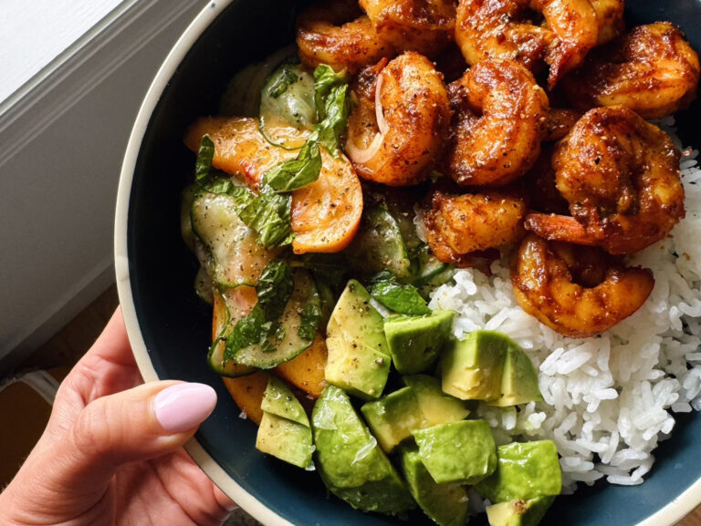

recipe Book
Spicy Shrimp with Peach Salad

Ingredent
- 1 lb. shrimp
- 1 teaspoon smoked paprika
- 1 teaspoon curry powder
- 1/2 teaspoon garlic powder
- 1/2 teaspoon coarse sea salt (start here, add more as necessary)
-
1/8 to 1/4 teaspoon cayenne pepper (add to taste – it’ll make it spicy!)
- 1 tablespoon butter
- a drizzle of honey (to taste – 1 tsp to 1 tablespoon)
- 2 peaches, pitted and sliced (about 2 cups)
- mint leaves (about 2 packed tablespoons)
Instruction
-
Peaches and Rice: Toss everything together for the peach salad. Prep
anything else you might serve this with (I like rice)
- Shrimp Seasoning: Toss the shrimp with the spices.
-
Cook Shrimp: Heat a drizzle of avocado oil in a skillet over medium
heat. Add the shrimp and cook until no longer translucent, about 2
minutes per side.
-
Finish: Add a knob of butter and a drizzle of honey at the end of
cooking to toss with the shrimp and pull up some of the browned bits
from the bottom of the pan. This will also make the shrimp saucy,
glazey, and delicious.
-
You’re Done! Yum! Plate the shrimp over rice with a big scoop of that
peach salad! So yum.